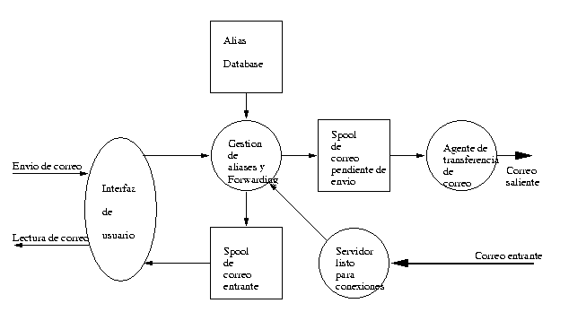

<html>
<head>
<title>
SendMail (I): Fundamentos del Correo Electrónico
</title>
</head>
<body>
<h1>
Sendmail (I): Fundamentos del Correo Electrónico
</h1>
<h3>
Autor: <i>Juan Antonio Martínez Castaño</i><br>
E-Mail: <a href="mailto:jantonio@drake.dit.upm.es">jantonio@drake.dit.upm.es</a>
</h3>
<h3>Copyright</h3>
Este artículo es Copyright 1998 de Juan Antonio Martínez Castaño y se 
distribuye bajo las siguientes condiciones:
<ul>
<li> Su distribución mediante medios electrónicos es libre, siempre y
cuando se conserve el texto íntegro y en su formato HTML original, haciendo
especial mención a la conservación del mensaje de copyright
<li> El autor y dueño del copyright cede los derechos de publicación impresa
a Prensa Técnica S.A., autorizando a ésta a realizar las modificaciones al
texto que considere oportunas para su publicación
<li> La distribución o copia, total o parcial, en cualquier medio impreso por 
parte ajena a Prensa Técnica S.A. Está expresamente prohibida
<li> Ningún particular podrá publicar este fichero en un servidor Web de acceso
público sin el consentimiento expreso del autor y de Prensa Técnica S.A.
</ul>
<h3>Indice:</h3>
<ol>
<li> <a href="#intro">Introducción</a>
<li> <a href="#filosofia">Filosofía </a>
<li> <a href="#smtp">El Protocolo SMTP</a>
<li> <a href="#headers">Las Cabeceras de un mensaje</a>
<li> <a href="#mime">Extensiones MIME</a>
<li> <a href="#resumen">Resumen. Conclusiones</a>
<li> <a href="#referencias">Referencias</a>
</ol>

<h3>Entradilla</h3>

Iniciamos aquí una serie de artículos sobre uno de los componentes más
conocidos, antiguos y potentes subsistemas de nuestro servidor: El gestor
de correo electrónico <b>Sendmail</b>. En este primer artículo desarrollaremos
los conceptos básicos del correo electrónico, dejando para posteriores
entregas la configuración y detalles de SendMail
<p>
<h3><a name="intro">Introducción</a></h3>

	Podríamos decir que el correo electrónico ha sido el padre de InterNet:
antes incluso de existir el concepto de Red Local, existían en el mundo UNIX
una serie de utilidades para transferencia de datos entre máquinas a través de
modem. Es el venerable -y todavía ampliamente usado- UUCP. Básicamente no era
sino una serie de utilidades que permitían transferir ficheros entre dos
máquinas ( UUCP es acrónimo de Unix-to-Unix-CoPy ) y ordenar la ejecución
remota de diversas aplicaciones. En paralelo con estos programas, todos los
sistemas incluían una utilidad para intercambiar mensajes entre los diversos
usuarios de un sistema. Esta utilidad se denominaba -cómo no- "mail"
<p>
	No tardó mucho en surgir la idea de que los intercambios de mensajes
pudieran producirse entre diversas maquinas, aprovechando los programas
existentes "mail" y "uucp". En este momento surgió la necesidad de establecer
un mecanismo para saber de dónde venían los mensajes, a dónde iban, y cómo
y por dónde debían encaminarse ( recordad que no tenemos aún red local, sino
un montón de sistemas ocasionalmente conectados vía módem ). La solución a
este problema fue un nuevo programa <i>delivermail</i> que todavía aparece en
algunas distribuciones de UNIX'es basados en 4.1 BSD  ( año 1979 )
<p>
	Con la aparición de ARPANet y las primeras redes locales, la complejidad
del sistema de correo, del encaminamiento y los problemas añadidos de gestión
de listas, modos de conexión entre máquinas, diferentes sistemas "UNIX", etc
hacen que <i>delivermail</i> crezca y crezca en complejidad. Finalmente en 1980
se publican los primeros Drafts sobre lo que será la futura InterNet ( lo que
ahora tenemos ) y aparece el primer RFC sobre un protocolo específico para
transferencia de correo electrónico: el Simple Mail Transfer Protocol ( SMTP )
<p>
	Por entonces un estudiante de la Universidad de Berkeley, Eric Allman
modifica <i>delivermail</i> y lo transforma en <i>sendmail</i>. La primera 
versión pública de sendmail apareció en la distribución 4.1c de BSD UNIX, 
que fue también la primera versión de UNIX que soportó de base TCP-IP 
<p>
	Desde entonces SendMail ha evolucionado rápidamente, creciendo en
potencia y en complejidad. En el momento de escribirse este artículo, la
última versión oficial es la 8.9.1. La potencia de este programa ha hecho
que siendo el "corazón" de la conectividad UNIX, sendmail sea también el
programa más difícil de configurar -que no de mantener- Por ello han aparecido
diversas variantes de sendmail, que hacen hincapié en los métodos de 
configuración, asi como diversos agentes de correo mucho más simples -y
mucho menos potentes- como puedan ser <i>smail</i> o <i>qmail</i>

<p>
<h3><a name="filosofia">Filosofía de funcionamiento del correo electrónico</a></h3>

Ya está bien de historia. Veamos el ejemplo del listado 1:
<p>
<table border>
<tr><td>
<pre>
[jantonio@cochito jantonio]$ telnet cochito.micasa.es smtp
Trying 192.1.1.1...
Connected to cochito.micasa.es.
Escape character is '^]'.
220 cochito.micasa.es ESMTP Sendmail 8.8.7/8.8.7; Thu, 6 Aug 1998 23:14:05 +0200
HELO cochito
250 cochito.micasa.es Hello jantonio@cochito.micasa.es [192.1.1.1], pleased to meet you
MAIL FROM: jantonio
250 jantonio... Sender ok
RCPT TO: jamc@eurielec.etsit.upm.es
250 jamc@eurielec.etsit.upm.es... Recipient ok (will queue)
DATA
354 Enter mail, end with "." on a line by itself
Hola mundillo
.
250 XAA00868 Message accepted for delivery
QUIT
221 cochito.micasa.es closing connection
Connection closed by foreign host.
</pre>
</td></tr>
<tr><th>Listado 1: Ejemplo de di&aacute;logo SMTP</th></tr>
</table>
<p>
	Podríamos llamar a este listado como el "hello world" del correo 
electrónico. La primera línea es una invocación mediante "telnet" al puerto
smtp ( definido en el <i>/etc/services</i> como "25/tcp" ) lo siguiente es 
un diálogo con el servidor en "lenguaje SMTP"
<p>
	Antes de explicar en detalle el protocolo SMTP, vamos a ver qué es lo
que sendmail debe ser capaz de hacer, y las razones de su complejidad. Para 
ello establecemos una primera distinción: Agentes de "entrega" de correo y
Agentes de "distribución" de correo ( en inglés MUA -Mail User Agent y MTA
-Mail Transfer Agent-, respectivamente ). La figura 1 ilustra las diferentes
relaciones entre los diversos elementos del sistema de correo
<p>
<table border>
<tr><td>

</td></tr>
<tr><th>
Figura 1: Diagrama de flujo del subsistema de correo
</th></tr>
</table>
<p>
	Un MUA se encarga de la distribución local de correo. Básicamente es
un interfaz de usuario, que permite editar, componer y enviar mail local. 
Ejemplos tipicos son "mail" "pine" "mailx" Algunos MUA's más elaborados
permiten "tunelizar" correo a través de pasarelas ppp, o gestionar listas
( p. ej "fetchmail" o "procmail" ). Todos los MUA's saben hablar SMTP para
enviar correo no local
<p>
	Un MTA se encarga del encaminamiento del correo entre los diversos
sistemas. Entre sus funciones se cuentan:
<ul>
<li> Detectar si el mail es local, y en caso afirmativo, ceder el control a un
  MUA local
<li> En el caso de mail remoto, debe ser capaz de reescribir las direcciones
  de correo del destinatario y remitentes del correo de manera que sean 
  compatibles con el sistema remoto y el agente de transporte
<li> Debe ser capaz de reconocer aliases, manejar ficheros de forwarding
<li> Se deben poder discriminar diversos agentes de distribución de correo:
  faxes, uucp, bitnet, arpanet, etc.
<li> Puesto que cada sistema tiene sus propios usuarios, configuraciones,
  requerimientos, condicionantes, etc, el MTA debe ser altamente configurable
  de manera que ningun potencial usuario se vea limitado
<li> Especial hincapié debe hacerse en cuanto a la seguridad: no debemos olvidar
  que estamos conectando con una maquina remota, cuya configuración 
  desconocemos, y que debemos hacer lo posible por autentificar tanto el
  origen como el destinatario del mensaje, así como seleccionar la ruta óptima
<li> El encaminamiento del correo debe ser rápido, fiable y que consuma pocos
  recursos. El sistema debe garantizar que el correo llegue a su destino
  o sea rechazado como "no v&aacute;lido". pero NUNCA debe perderse por el i
  camino. Vamos, que igualito que en la vida real....
</ul>
<p>
<table><tr><td width="40%"> <table border><tr><th>
  El encaminamiento del correo debe ser rápido, fiable y consumir pocos
  recursos. El sistema debe garantizar que el correo llegue a su destino
  o sea rechazado como "no v&aacute;lido". pero NUNCA debe perderse por 
  el camino
  </th></tr></table> </td><td> </td><td> </td></tr></table>
<p>
Por todo ello, <i>Sendmail</i>, y en general todos los MTA's hacen hincapié
en la rapidez, la posibilidad de configuración y el bajo consumo de recursos.<br>
¿Cómo conjuntar estos tres puntos, aparentemente irreconciliables? piénsese, 
por ejemplo, que sólo el "parser" para leer la configuración del sistema de
correo consume más de la mitad del tiempo de CPU que necesita sendmail para
saber qué hacer con nuestro inocente "hola mundillo". Una alternativa es
tener permanentemente en memoria una database con la configuración, pero 
entonces nos encontramos con el problema de gasto de recursos...
<p>
El truco consiste en hacer un fichero de configuración cuyo análisis sea
inmediato para sendmail, aun a costa de hacerlo incomprensible para los 
humanos. Un ejemplo t&iacute;pico, extra&iacute;do de un /etc/sendmail.cf:
<p>
<pre>
....
R$* < @ > $*            $@ $>Parse0 $>3 $1              user@ => user
R< @ $=w . > : $*       $@ $>Parse0 $>3 $2              @here:... -> ...
R$- < @ $=w . >         $: $(dequote $1 $) < @ $2 . >   dequote "foo"@here
R< @ $+ >               $#error $@ 5.1.1 $: "user address required"
R$* $=O $* < @ $=w . >  $@ $>Parse0 $>3 $1 $2 $3        ...@here -> ...
....
</pre>
<p>
Incomprensible, ¿verdad?. Bueno, con un poco de entrenamiento... No debemos
olvidar que se trata de un código escrito para que lo entienda el programa, 
no el usuario
<p>
	Hasta hace unos años, configurar sendmail era una tarea para auténticos
gurús. La frase "No puede llamarse gurú de UNIX quien nunca ha editado a mano
un sendmail.cf" afortunadamente ha pasado a la historia. Ahora, mediante el
uso de macros y de directivas "prefabricadas" de configuración, la configuración
de <i>sendmail</i> está convirti&eacute;ndose en una tarea rutinaria, y sólo es 
necesario editar el fichero en casos desesperados.
<p>
<table><tr><td width="40%"> <table border><tr><th>
Hoy en d&iacute;a, mediante el uso de macros y de directivas "predefinidas" 
de configuración, el manejo de <i>sendmail</i> se ha convertido en una
tarea rutinaria
</th></tr></table> </td><td> </td><td> </td></tr></table>
<p>
	Como conclusión podemos decir que todas las reglas que van a definir el
comportamiento de nuestro sendmail están definidas en /etc/sendmail.cf. 
SendMail no es sino el operario de la oficina de correos que coge cada carta e
intenta buscarse la vida para hacer que llegue a su destino, en función de lo
que el administrador del sistema le ha dicho que puede y debe hacer
<p>
<h3><a name="smtp">El protocolo SMTP</a></h3>

Antes de introducirnos en la instalación y configuración de sendmail - que
será desarrollada en mayor amplitud en próximos números de LINUX ACTUAL - 
echaremos un vistazo al protocolo SMTP. para ello miremos los siguientes RFC's
<p>
<ul>
<li> Standard for the format of ARPA Internet text messages: RFC-822
<li> Simple Mail Transfer Protocol: RFC-821
<li> Extensions for SMTP and Internet text message format: RFC-1123
<li> Domain Name Convention for Internet User Aplications (DNS): RFC-819
<li> UUCP Mail Interchange Format Standards: RFC-976
<li> Multi-purpose Internet Mail Extensions (MIME) RFC-1341
</ul>
<p>
O mejor, una vez superado el susto volvemos a nuestro telnet y tecleamos:
<pre>
[jantonio@cochito jantonio]$ telnet cochito.micasa.es smtp
Trying 192.1.1.1...
Connected to cochito.micasa.es.
Escape character is '^]'.
220 cochito.micasa.es ESMTP Sendmail 8.8.7/8.8.7; Fri, 7 Aug 1998 00:22:12 +0200
help
214-This is Sendmail version 8.8.7
214-Topics:
214-    HELO    EHLO    MAIL    RCPT    DATA
214-    RSET    NOOP    QUIT    HELP    VRFY
214-    EXPN    VERB    ETRN    DSN
214-For more info use "HELP <topic>".
214-To report bugs in the implementation send email to
214-    sendmail-bugs@sendmail.org.
214-For local information send email to Postmaster at your site.
214 End of HELP info
</pre>
<p>

Todos los comandos ( realmente DSN no es un comando, sino una serie de flags
que indican que hacer con el destinatario y el remitente ) constan de cuatro
letras ( idealmente mayúsculas; los nuevos MTA's reconocen indistintamente
mayúsculas y minúsculas )
<p>
<ul>
	<li> <u>HELO</u> ( de "hello" ) inicia el dialogo e identifica la maquina 
	  desde la que se establece la conexión. Los nuevos sendmails 
	  autentifican el saludo, de manera que no le podemos "mentir" 
	  a sendmail
	<li> <u>EHLO</u> ( de "Extended hello" ) es equivalente, solo que le indica al
	  sistema remoto que "sabemos" hablar extended SMTP
	<li> <u>MAIL FROM: &lt;remitente&gt;</u> indica que vamos a enviar un mensaje, y que
	  el origen ( sender ) es el indicado
	<li> <u>RCPT TO: &lt;destinatario&gt;</u> indica la direccion de destino del correo.
	  Pueden ser especificados diversos destinos, pero solo un remitente
	<li> <u>DATA</u> indica el comienzo del mensaje. Para finalizar la introducción
	  de datos, se introduce una línea que comience por punto "."
	  En el caso de querer introducir una línea que comienze por "." dentro
	  del texto, lo haremos duplicando dicho punto ".."
	<li> <u>NOOP</u> ( "No Operation" ) pues eso...
	<li> <u>QUIT</u> para finalizar la sesi&oacute;n
	<li> <u>EXPN</u> ( "Expand" ) sirve para indicar como se va a resolver la 
	  dirección de correo del RCPT que le indiquemos.
	<li> <u>VRFY</u> ( "Verify" ) sirve para saber si el sendmail remoto va a 
	  aceptar o no una dirección de correo. Puesto que un antiguo truco de 
	  hacker consistía en buscar usuarios "standard" en un sistema 
	  preguntando con VRFY y EXPN al sendmail de dicho sistema, estos son 
	  inhabilitados en los sendmails modernos
	<li> <u>VERB</u> ( "Verbose" ) presenta mensajes en modo verboso. SMTP 
	  especifica que las respuestas a las peticiones del protocolo son 
	  salidas numéricas. Poniendo verbose a ON se le añaden diversos 
	  textos que sirven de ayuda a interpretes humanos.
	<li> <u>RSET</u> ( "Reset" ) resetea la introduccis&oacute;on de 
          datos, partiendo de cero
	<li> <u>TURN</u> indica al sendmail remoto, que el cliente pasa a modo 
	  "escucha" pudiendo actuar el antiguo servidor como cliente. Utilizado
	  antiguamente en conexiones telefónicas, casi ning&uacute;n MTA lo 
          utiliza hoy en día
	<li> <u>ETRN</u> fuerza el env&iacute;o de correo dirigido a un 
	  determinado host o dominio en el servidor. Su implementación y 
	  uso es opcional
</ul>
<p>
Con estos pocos comandos se construye toda la historia....
<p>
<h3><a name="headers">Las cabeceras del mensaje</a></h3>

	Ahora que sabemos como se envía el mensaje, vamos a ver cómo se
identifica cada mensaje, y como extraer e introducir información sobre
la fecha, el origen y destino, la ruta, las extensiones, el status, etc...
para ello cogemos el RFC-822 y empezamos a estudiar las cabeceras de un
mensaje de correo electrónico. Veamos un ejemplo en el listado 2:
<p>
<table border><tr><td>
<pre>
From mdw21@hermes.cam.ac.uk  Thu May  7 00:34:41 1998
Return-Path: <mdw21@hermes.cam.ac.uk>
Received: from sanson.dit.upm.es (sanson-cdc.dit.upm.es [138.4.1.130])
        by drake.dit.upm.es (8.8.7/8.8.7) with ESMTP id AAA01509
        for <jantonio@drake.dit.upm.es>; Thu, 7 May 1998 00:34:41 +0200
Received: from violet.csi.cam.ac.uk (violet.csi.cam.ac.uk [131.111.8.58]) 
	by sanson.dit.upm.es (8.8.4/3.14) with ESMTP 
	id BAA14729
	for <jantonio@dit.upm.es>; Thu, 7 May 1998 01:34:16 +0200 (MET DST)
Received: from mdw21.clare.cam.ac.uk ([131.111.214.145] helo=mdw21)
        by violet.csi.cam.ac.uk with smtp (Exim 1.92 #1)
        for jantonio@dit.upm.es
        id 0yXDhZ-00075a-00; Thu, 7 May 1998 00:34:17 +0100
Message-ID: <001501bd7947$a68f73e0$91d66f83@mdw21.clare.cam.ac.uk>
From: "Mark Wever" <mdw21@cam.ac.uk>
To: "Juan Antonio Martinez" <jantonio@sanson.dit.upm.es>
Subject: Re: Puzzle bobble source code for Linux 
Date: Thu, 7 May 1998 00:35:27 +0100
MIME-Version: 1.0
Content-Type: text/plain;
        charset="iso-8859-1"
Content-Transfer-Encoding: 7bit
X-Priority: 3
X-MSMail-Priority: Normal
X-Mailer: Microsoft Outlook Express 4.72.3110.1
X-MimeOLE: Produced By Microsoft MimeOLE V4.72.3110.3
Status: RO
X-Status: 

Hello, you may remember you wrote to me ages ago about PB.
....
</pre>
</td></tr>
<tr><th>Listado 2: Ejemplo de cabecera de mensaje de correo</th></tr>
</table>
<p>
Todo mensaje de correo trae una cabecera y un cuerpo. Las cabeceras empiezan
siempre con un "From " al comienzo de la línea y acaban con una l&iacute;nea en 
blanco. El cuerpo empieza y acaba siempre con una linea en blanco. Aunque
Microsoft se empeñe en decir lo contrario, el RFC-822 prohíbe expresamente
utilizar en las cabeceras caracteres no-ASCII ( códigos mayores que 0x7f ). 
Esto implica que ninguna dirección de correo puede tener tildes, eñes, etc
<p> 
Echemos un vistazo a los datos que son relevantes a <i>Sendmail</i>.
<ul>
<li> Tenemos en primer lugar el campo <u>From</u>. Indica quién envia el mensaje. Puesto
que el SMTP no impone ninguna restricción al mensaje MAIL FROM: es mision de
sendmail autentificar dicho sender. Por ello intenta hacer una petición de
identd con la máquina remota, y en el caso de que la conexión no la
establezca quien aparece en el campo FROM: , o bien un "trusted user" ( otro 
sendmail, por ejemplo ) se incluye en la cabecera un mensaje de 
<u>X-Autentication-Warning</u> indicando que es posible que el sender no 
corresponda a quien dice ser. La lista de "trusted users" se incluye en el 
fichero de configuración de sendmail

<li> <u>Return-Path:</u> indica a sendmail, por donde debe ser rutado el 
mensaje en caso de devolución. No todos los mailers hacen caso de dicho 
mensaje, salvo que sendmail sea expresamente instruído para hacerlo. 
Otro truco antiguo de hacker consistía en engañar al correo para que el 
que recibía el mensaje, al responder respondiera a la máquina "ladrona" 
en lugar de a la persona suplantada. Existen diversas variantes al uso 
"truculento" de esta cabecera, cuyo estudio se deja a los fanáticos del 
"hackering"

<li> <u>Received:</u> indica todas y cada una de las máquinas por donde ha ido pasando el
mensaje. Cada MTA inserta un "Received", de manera que estudiando detenidamente
la cabecera es posible hacer el seguimiento de un mensaje ( a menos que la
cabecera este "trampeada", lo que exige un cierto nivel de conocimiento... )
As&iacute;mismo, Contando el número de "Received" que contiene una cabecera 
podemos especificar un "time-to-live" de un mensaje, definiéndolo como el 
número de saltos que puede dar un mensaje entre máquina y máquina antes de 
considerar que dicho mensaje no puede ser entregado. De nuevo, un parámetro 
del fichero de configuración de sendmail, define el TTL de un mensaje

<li> <u>Message-ID:</u> es una etiqueta que identifica el mensaje y garantiza que sea
unico en toda la Internet. El método habitual consiste en formar dicho ID con
el nombre de la maquina origen, la fecha del mensaje y el nombre asignado en
la cola de env&iacute;o

<li> <u>X-Priority:</u> Indica al MTA la prioridad con que debe ser tratado un mensaje
El fichero de configuración de sendmail define diversos niveles de prioridad, 
asignando diversos valores a diversas etiquetas ( "normal", "urgent", etc )
Cuando sendmail procesa la cola de mensajes en espera de ser enviados, intenta
enviar primero los de mayor prioridad
</ul>
<p>
No podemos incluír aquí todas las posibles cabeceras por motivos más que
evidentes de espacio. Remitimos al lector a la lectura del RFC-822 y a sus
diversas revisiones.
<p>
¿Cómo se incluye la información de cabecera en el protocolo SMTP?. Muy
sencillo: Despues de la instrucción DATA, y hasta encontrar la primera línea
vacia, sendmail reconoce e inserta los diversos "tags" correspondientes 
a las cabeceras del mensaje. una vez encontrada una linea vacia o una que no
corresponda a una cabecera válida, sendmail interpreta como "body" o cuerpo
del mensaje todo lo que siga a continuación
<p>
<h3><a name="mime">Multi-Purpose Internet Mail Extensions.</a></h3>

	Hasta ahora hemos asumido que todos los mensajes estaban basados en
caracteres ASCII de 7 bits. Pero ¿Qué hacer cuando lo que se desea es enviar
un mensaje que incluye caracteres internacionales, o código binario?.
<p>
	Una primera aproximación es utilizar un MTA que hable ESMTP ( extended
SMTP ). Este protocolo permite la transmision de caracteres de 8 bits. El
problema fundamental consiste en que nosotros ( el usuario que envía el 
mensaje ) no tenemos control sobre el camino que dicho mensaje va a recorrer, 
específicamente: no sabemos si todos los MTA's que nuestro mensaje se va a
encontrar saben hablar ESMTP
<p>
	Una segunda aproximación consiste en convertir nuestro mensaje a un
código 7bits puro. Las utilidades "uudecode" y "uuencode" se encargan de dicha
tarea. El problema añadido es que estos paquetes sólo son estándard en el
mundo UNIX, y aunque parezca mentira, no todo el mundo tiene la suerte de tener
un UNIX encima de la mesa...
<p>
	La solución más viable consiste en dejarle al MUA la tarea de codificar
y descodificar el mensaje de forma transparente al usuario: mediante los
famosos "Attachments" le indicamos a nuestro mailer que vamos a insertar un
fichero con  un formato X y que dicho fichero debe ser incluído en el cuerpo
del mensaje a enviar.
<p>
	Para ello el MUA "clasifica" el fichero en una "categoría", y lo 
codifica en la forma que considere más conveniente, incluyendo en las cabeceras
y en el cuerpo del mensaje que envia información sobre los datos que incluye
y su forma de decodificación. Estas categorías están definidas - cómo no - 
en un RFC y constituyen las denominadas MIME's ( Multipurpose Internet Mail
Extensions ). El objetivo de MIME es el de permitir que cualquier tipo de 
mensaje ( texto, imagenes, voz, datos, binarios, etc ) pueda ser enviado
a través de SMTP, de una forma sencilla y reversible
<p>
<p><table><tr><td width="40%"> <table border><tr><th>
El objetivo de MIME es el de permitir que cualquier tipo de 
mensaje ( texto, imagenes, voz, datos, binarios, etc ) pueda ser enviado
a través de SMTP, de una forma sencilla, reversible y transparente al usuario
</th></tr></table> </td><td> </td><td> </td></tr></table><p>
<p>
Volviendo a nuestra cabecera ejemplo, nos encontramos con las entradas
<p>
<pre>
MIME-Version: 1.0
Content-Type: text/plain;
        charset="iso-8859-1"
Content-Transfer-Encoding: 7bit
</pre>
<p>
<ul>

<li> La primera indica la version de MIME que utiliza el mensaje
<li> Content-Type indica la clasificación del "attachment" que se incluye en el 
  mensaje
<li> Content-Transfer-Encoding: indica el tipo de codificación utilizada a la hora
  de incluír el attachment en el cuerpo del mensaje

</ul>
<p>
Se pueden incluír múltiples attachments en un mensaje, cada uno con su propio
content-type y Content-transfer-encoding. Sendmail es transparente a dichos 
datos, pues están insertados en el cuerpo del mensaje, y lo único que requiere
es que sean datos de 7bits ( 8, si soporta ESMTP ). Los Mimetypes serán usados
a la recepción del mensaje por el MUA para reconstruír el fichero original
<p>
<h3><a name="resumen">Resumen. Conclusión</a></h3>

A modo de resumen se puede indicar:
<ul>
<li> En la gestión de correo electrónico intervienen dos tipos de agentes: 
  MUA's ( interfaz de usuario ) y MTA's ( encaminamiento y distribución )
  SendMail es un MTA, aunque tiene un mínimo MUA para su uso directo desde
  línea de comandos
<li> El MTA ideal es rápido, eficiente, altamente configurable, y garantiza que
  ningún mensaje es perdido. El mayor problema de cara al usuario es casi
  siempre la configuración
<li> <i>Sendmail</i> posee un fichero de configuración /etc/sendmail.cf, de 
  sintaxis casi críptica, pensado para un rápido procesamiento por el programa,
  no por el usuario. Diversas utilidades de configuración mediante macros
  facilitan al administrador del sistema la tarea de configurar sendmail
<li> La transferencia de mensajes a través de InterNet está regulada mendiante
  una serie de RFC's, que definen:
	<ul>
	<li>El protocolo de transferencia
	<li>El formato de los mensajes
	<li>Las extensiones al protocolo
	</ul>
</ul>
<p>
En este artículo hemos introducido al lector en los fundamentos del correo 
electrónico. En futuros números de LINUX ACTUAL nos centraremos especificamente
en el caso de SendMail, introduciendo al lector en la instalación y 
configuración de dicho software, presentando ejemplos de configuraciones
e introduciendo las diversas opciones y posibilidades. Posteriormente se
describirá sendmail y los ficheros de configuración en profundidad, explicando
detalladamente la "magia" de la configuración de sendmail
<p>
En el CD-Rom que acompaña a esta revista encontrará el lector los RFC's que
se refieren de una u otra forma al correo electrónico, asi como la última
distribución disponible de sendmail en formatos <i>.rpm</i> y <i>.tgz</i>
<p>
<h3><a name="referencias">Referencias</a></h3>

Puesto que el correo electrónico es incluso más antiguo que InterNet, está
profundamente documentado, existiendo una ampila bibliografía y referencias
sobre el tema. Indicamos aquí alguna de las más relevantes:
<p>
Referencias sobre TCP-IP y SMTP
<dl>
<dd>	Douglas E. Comer<br>
	"Internetworking con TCP-IP" Tercera Edición ( tres volúmenes )<br>
	Prentice Hall international<br>
	ISBN 0-13-474321-0<br>
	http://www.phall.com<br>
	( una colección que todo administrador de sistemas debe tener en su 
	biblioteca informática )
</dl>
<p>
Referencias sobre Sendmail
<dl>
<dd>	Eric Allman,Bryan Costales, Neil Rickert<br>
	"Sendmail" Segunda edición<br>
	O'Reilly Associates, Inc<br>
	ISBN 1-56592-056-2<br>
	http://www.ora.com<br>
	( considerado como "la biblia de sendmail" es el manual oficial
	-reconocido como tal por el creador de sendmail-  )
</dl>
<p>
RFC's
<dl>
<dd> Consultar el fichero indice incluído en el CD-Rom
</dl>
<p>
Sendmail Home Page && ftp site
<dl>
<dd>	http://www.sendmail.org
<dd>	ftp://ftp.sendmail.org/pub/sendmail
</dl>
Grupos de News y listas de correo
<dl>
<dd>	news:comp.mail.sendmail
<dd>	mailto:majordomo@lists.sendmail.org
</dl>
FAQ && Tutorials de sendmail
<dl>
<dd>	http://www.informatik.uni-kiel.de/~Eca/faqs/sendmailv8.html
<dd>	http://www.wcmh.com/uworld/archives/95/tutorial/008/008.txt.html
</dl>
</body>
</html>
